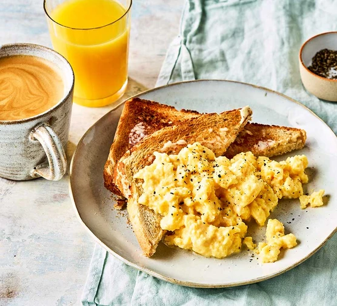

Scrambled Eggs (Trứng bác)
Trứng bác là một trong số những đồ ăn mà tôi thích, nó rất ngon!

Nguyên Liệu
- 2 quả trứng
- 1tbs bơ
- 2tbs kem
Phương pháp
- Đập trứng cho vào tô. Cho nước mắm vào. Quậy đều.
- Cho dầu ô liu vào chảo. Bật lửa vừa. Cho hành vào chảo, xào cho thơm, khoảng 1 phút.
- Đổ trứng đã đánh vào chảo. Quậy liên tục trong 1 phút hoặc đến khi trứng gần chín là tắt bếp.
- Ăn thôi!